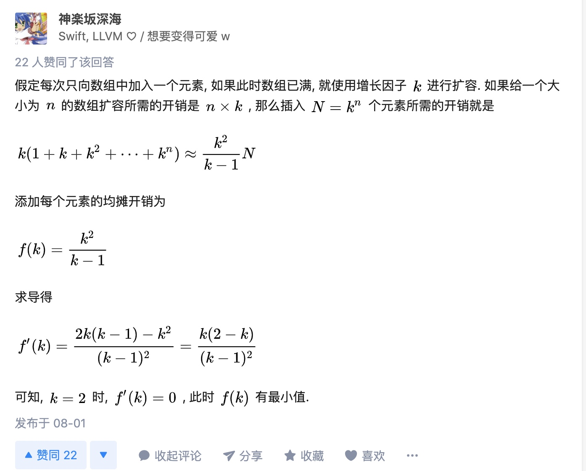

STL-C++
本文是关于c++中STL库中的一些记录，主要是因为之前在网上找到关于STL的资料太过简洁，并且只停留在如何使用函数，对于底层具体实现较少，所以想自己对这些知识记录一下，当然我目前对STL库了解也不深入，以后如果会有新的了解的话，会继续更新。
vector
vector定义
1 | template<class _Ty, |
vector底层采用的数据结构是一段连续的线性空间，vector可以当做被封装之后的数组，提供了一些方法使得我们更好的对数组进行操作。
_Myfirst代表数组的第一个元素的首地址
_Mylast代表数组的最后一个元素的末尾字节地址
_Myend代表vector整个容器所占内存空间的末尾空间
capacity()与size()
size()返回vector中目前的元素个数
capacity()返回目前vector中容量大小
简单点可以认为
size = _Mylast - _Myfirst
capacity = _Myend - _Myfirst
扩容
当_Mylast == _Myend时，会引起vector的扩容，vector中扩容方式为每次2倍空间增长(普遍为2倍，貌似还有1.5倍)
在新增数据的时候，会分配一块更大的内存，将原来的数据拷贝至新内存空间，然后将旧内存空间释放掉，然后再插入新的元素。值得注意是，在对vector操作时如果引起了vector中空间重新配置，则先前的迭代器失效。
如果采用常数的扩容方式时扩容操作的均摊时间复杂度为O(N)，而采用倍数增长的方式则可以使得均摊的复杂度变为O(1),这里大家可以举一些例子算一下，不在赘述。
为什么采用2倍的方式进行扩容而不是3倍，4倍，这里参考知乎的一个回答：

这里也有讨论扩容因子K（即每次扩容的倍数)对于时间以及空间上的影响:
从时间上考虑K越大越好，从空间考虑K越小越好
我们来看一下K = 2时的情况。
每次扩容后capacity的情况如下：1，2，4，8，16，32 ……..
当我们释放了4的空间，我们寻找8的新空间，再次扩容，释放8，寻找16。。
仔细分析，第5次扩容时，需要寻找16的新空间，第4次释放了8，第3次释放了4，第2次释放了2，第1次释放了1，所以 1 + 2 + 4 + 8 = 15 < 16，也就意味着，之前释放的空间，永远无法被下一次的扩容利用，这对内存与cache是非常不友好的。
我们再来看一下K = 1.5的情况。
每次扩容之后capacity的情况为：1，2，3，4，6，9，13，19，28 ……
再按刚才的思路分析一遍，1 + 2 >= 3; 2 + 3 + 4 >= 6; 6 + 9 >= 13 …….
所以，当K为1.5时，显然对内存和cache要友好很多，至少从容量上来说，是存在重复利用的可能性的。
push_back()与emplace_back()
push_back与emplace_back作用都是将一个元素放入vector末尾，但是emplace_back效率要比push_back高。
push_back放入元素时，会首先执构造函数，然后将构造好的元素拷贝或者移动到vector中，而emplace_back则是在vector的内存空间中直接创建元素，省去了拷贝或者移动的消耗。（拷贝或者移动与push_back()中是左值还是右值有关,左值为拷贝，右值为移动)
vector元素存放位置
vector中元素存放位置在堆上，被分配到栈上的元素在被push_back或者emplace_back时都会被放到堆上，如果想让vector中存储栈上的元素，可以将vector中的元素设置为原来元素的指针